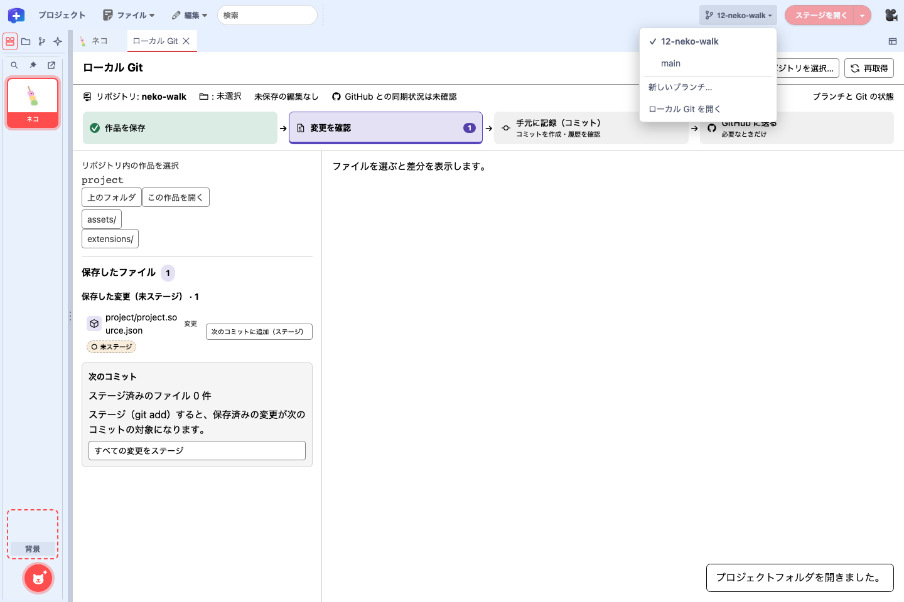
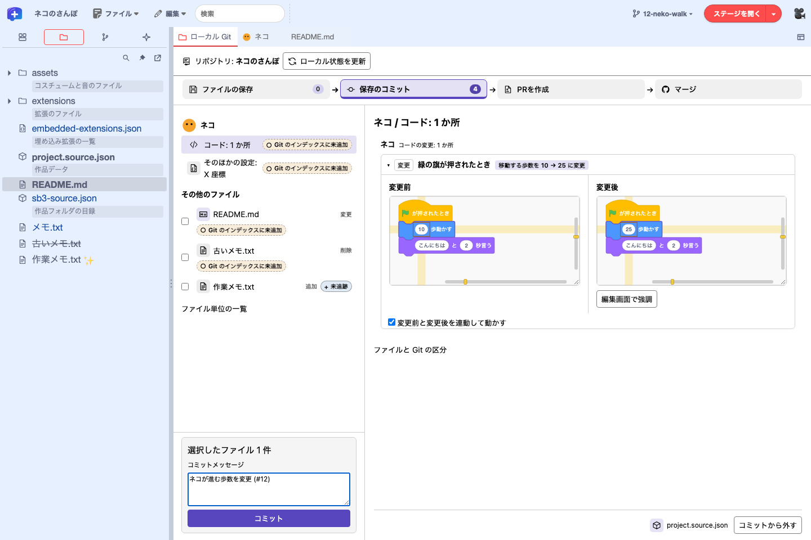
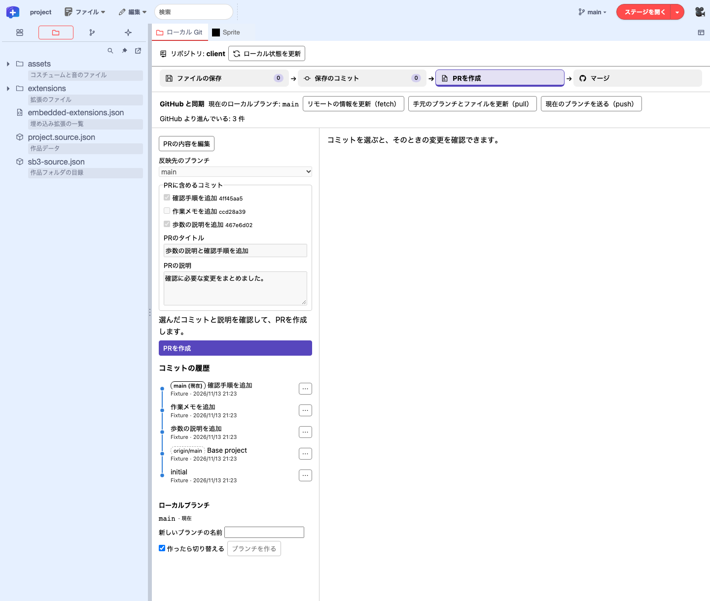
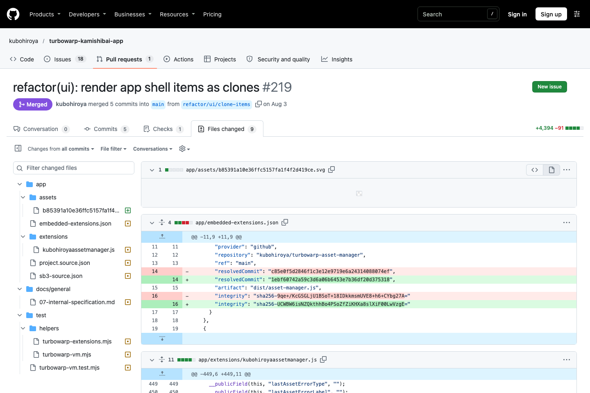
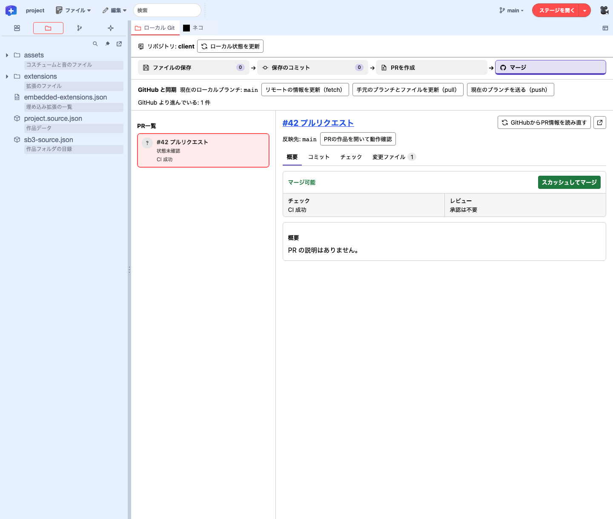
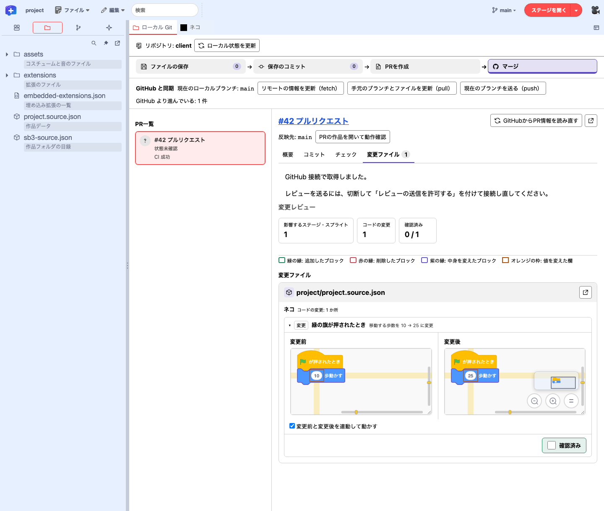
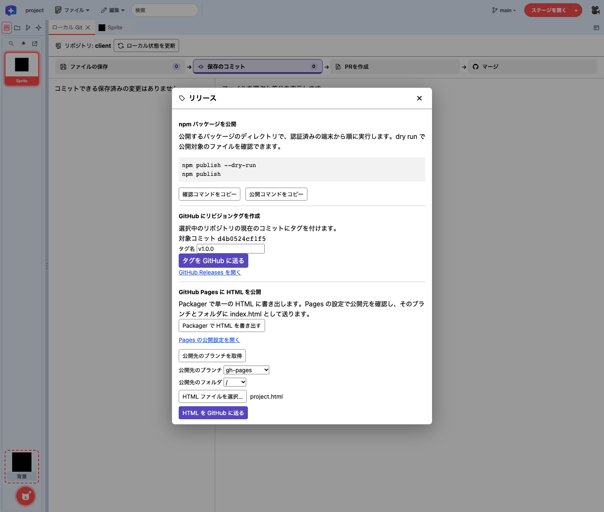

機能ガイド 12/12 · 2026年11月14日更新
GitHubで作品を開発する
作品フォルダを GitHub で管理し、issue と作業ブランチを使って編集・コミット・レビューを進めます。Editor で作品の差分を確かめてコミットし、プルリクエストは GitHub の画面か、GitHub 接続を用意した Editor で作ります。
図版は 2026年11月14日時点の公開版 Editor と GitHub の画面全体です。GitHub 接続が必要な画面は、検証用の模擬接続で撮影した時点のものです。画像を選ぶと原寸で開けます。
12.1 作品を GitHub に置く
このガイドでは 1 リポジトリに 1 作品を基本にします。Project Starter で作るリポジトリでは、作品を project/ に置き、README や検査・リリースの設定をその外に置きます。同じ作品の改良は作業ブランチで進め、配布する版はリリースで管理します。
neko-adventure/ リポジトリのルート
├── .git/
├── project/ Editor で開く作品フォルダ
├── README.md
└── .github/workflows/ この作品の検査とリリースProject Starter で Scratch 作品を移す
scratch.mit.edu で作ってきた作品は、turbowarp-plus-editor-project-starter で GitHub のリポジトリに移せます。作品を sb3-toolchain の作品フォルダに展開し、検査とリリースを行う GitHub Actions と、issue・プルリクエストの書式を加えたリポジトリを作ります。Node.js 24 以降、Git、GitHub CLI（gh）が必要です。
次の例は、作業フォルダに neko.sb3 がある場合です。
npx @kubohiroya/turbowarp-plus-editor-project-starter@0.1.0 init ./neko.sb3 --dir neko-adventureinit は手元にリポジトリを作り、Git の作者情報があれば最初のコミットまで行います。作者情報が未設定の場合は、リポジトリで作者を設定し、git -C neko-adventure commit -m "Import neko" を実行します。共有している Scratch 作品は、SB3 のパスの代わりに作品ページの URL を渡せます。
生成した neko-adventure/project は、Editor の「ファイル」→「プロジェクトフォルダを開く…」で開けます。GitHub に置く準備ができたら、gh auth login で認証してから publish を実行します。既定では非公開のリポジトリを作り、main を送ります。
npx @kubohiroya/turbowarp-plus-editor-project-starter@0.1.0 publish neko-adventure| 場所 | 中身 |
|---|---|
project/ | 作品フォルダ。Editorで開いて編集し、保存する |
.github/workflows/check.yml | mainへのpush、プルリクエスト、手動実行で作品を検査し、試せるSB3を作る（「Check project」） |
.github/workflows/release.yml | リリースを公開すると、SB3とSHA-256をそのリリースに添付する |
.github/workflows/scratch-import.yml | Scratchで共有し直した最新版を、プルリクエストとして取り込む（「Import from Scratch」）。Scratch の共有 URL から取り込んだ作品では、元の Scratch 作品 ID を使える |
.github/ISSUE_TEMPLATE/ など | 「不具合」「アイデア・改善」のissueの書式と、プルリクエストの確認項目 |
移行期間にScratchでも編集を続ける場合や、Scratch側の作品ページの扱いは、移行の手順で説明しています。
turbowarp-plus-editor-project-starter · sb3-toolchainの作品フォルダ
12.2 開発の流れと、どこで何をするか
一つの変更を、一つのissue・一つのブランチ・一つのプルリクエストで進めます。main ブランチはいつでも遊べる状態に保ち、作業はブランチで行います。
| 手順 | Plus Editor | GitHubの画面・ほかの道具 |
|---|---|---|
| issue | — | GitHubの「Issues」 |
| ブランチ | メニューバーのブランチのボタン、またはローカル Git の「PRを作成」で作って切り替える | issueの「Create a branch」、GitHub Desktop、git switch -c |
| 編集・保存 | 「ファイル」→「プロジェクトを保存」で作品フォルダに書く | — |
| コミット | 「保存のコミット」で対象を選び、メッセージを入力してコミット | GitHub Desktop、git commit |
| push・pull | GitHub 接続を用意した Editor で、ローカル Git の「GitHub に接続…」から認証し、「GitHub と同期」のボタンで操作 | GitHub Desktop、git push・git pull |
| プルリクエスト | 「マージ」でブロック単位に比較。接続と権限に応じて、PR の作成、比較した版の実行、レビューの送信もできる | GitHub の「Pull requests」、gh pr |
| リリース | 「ファイル」→「リリース…」で npm コマンドのコピー、タグの作成、Pages 向け HTML の送信（タグと HTML の送信には push を許可した接続が必要） | GitHubの「Releases」、gh release create |
ブラウザーで作品フォルダを読み書きするには、File System Access 対応の Chrome や Edge が必要です。操作ごとに必要な接続と権限は、対応表で確認できます。 操作と接続の対応表
12.3 やることをissueに書く
- GitHubでリポジトリを開き、「Issues」→「New issue」を押します。
- 「アイデア・改善」か「不具合」を選び、書式に沿って書きます。「できあがりの目安」には、完成したと言える確かめ方をチェックボックスで書きます。
- 「Create」を押すと、
#12のような番号が付きます。自分で取りかかるときは「Assignees」に自分を入れます。
一つのissueには、一つのプルリクエストで終えられる大きさの変更を書きます。大きな目標は、いくつかのissueに分けます。
12.4 作業用のブランチを作る
ブランチを作る前に、手元の main を GitHub の最新に合わせます（12.7 の pull）。そのあと、Editor でブランチを作ります。
- 「ファイル」→「リポジトリを選択…」でリポジトリのフォルダを選びます。作品をまだ開いていなければ、ローカル Git の上部の「作品を開く」で
project/を開きます。 - 作品の実行を止め、編集をすべて保存し、必要な変更をコミットしておきます。未保存の編集や未コミットの変更があると、ブランチを切り替えられません。
- ローカル Git の「PRを作成」を開き、「ローカルブランチ」の「新しいブランチの名前」に、issue の番号と内容が分かる名前（例
12-neko-walk）を入れます。「作ったら切り替える」にチェックし、「ブランチを作る」を押します。メニューバーのブランチのボタンの「新しいブランチ…」からも作れます。

過去のコミットから枝分かれさせるときは、「Git 履歴」でコミットの「⋯」→「ここからブランチを作る…」を選びます。
GitHub の issue の「Development」→「Create a branch」で作った場合は、手元で fetch してから、「GitHub（origin）のブランチ」の一覧で「作って切り替える」を押します。GitHub Desktop の「New branch」や git switch -c 12-neko-walk で作った場合は、ローカル Git の「ローカル状態を更新」を押します。必要に応じて「ファイル」→「プロジェクトフォルダを開く…」で同じフォルダを開き直します。
12.5 作品を編集して保存する
ブロック、変数・リスト、スプライト、コスチューム、音などを編集し、「ファイル」→「プロジェクトを保存」を選びます。作品フォルダの project.source.json と、必要に応じて assets/ と sb3-source.json が更新されます。保存の前に、フォルダが外部で変更されていないかを確かめます。
同じリポジトリの作品を更新する間は「プロジェクトを保存」を使います。「名前を変えて保存…」で SB3 を作ると、作品フォルダとのつながりが外れます。保存済みのファイルの Git 状態は 「作品フォルダ」パネルで確認できます。
12.6 変更を確認してローカルにコミットする
保存すると編集内容が作品フォルダに書き込まれ、コミットすると選んだファイルの変更が手元の Git 履歴に加わります。GitHub に送るには push を使います。
- 「ファイルの保存」を開きます。未保存のファイル名を選ぶと、右側で最新コミット（HEAD）との差分を確認できます。「未保存のファイルを保存」を押すと編集内容が作品フォルダに書き込まれます。
- 横の「保存のコミット」に切り替えます。ファイル名を押すと、右側で差分を確認できます。作品のコードはスプライトやステージの「コード」を選ぶと、変更前と変更後のブロックで比較できます。
- 「その他のファイル」や「ファイル単位の一覧」で、コミットするファイルにチェックを付けます。スプライトやステージの差分を開き、右下の「コミットに含める」で選ぶこともできます。左下のコミット欄で選択件数を確かめ、「コミットメッセージ」に変更内容（例
ネコが進む歩数を変更 (#12)）を入力して「コミット」を押します。 - 画面左上の「Git 履歴」で作ったコミットを選ぶと、「PRを作成」が開き、含まれた変更を確認できます。

コミットの作者を設定する
コミットの作者には、作品リポジトリの user.name と user.email が優先して使われます。Desktop が Git のグローバル作者設定を Editor に渡すビルドでは、リポジトリに作者情報がないときにその設定を使います。
作者が未設定と表示されたら、作品のリポジトリをターミナルで開き、そのリポジトリに名前とメールアドレスを設定します。公開リポジトリには、GitHub のアカウント設定で確認した noreply アドレスも使えます。設定後に「ローカル状態を更新」を押して、もう一度コミットします。
git config --local user.name "あなたの名前"
git config --local user.email "you@example.com"12.7 GitHubに送る（push）
GitHub 接続を用意した Editor では、Editor から push・pull できます。既定の接続方式は、メニューバー左端の Plus ロゴ →「GitHub 接続設定…」で選びます。
- ローカル Git の先頭行にある「GitHub に接続…」を開きます。接続先を確認し、「GitHub に送ることを許可する（push）」にチェックして「GitHub に接続」を押します。表示に従って GitHub で認証します。
- 接続後に「マージ」を開き、「GitHub と同期」の「現在のブランチを送る（push）」を押します。強制 push は行いません。
- GitHub の変更を取り込むときは「リモートの情報を更新（fetch）」と「手元のブランチとファイルを更新（pull）」を使います。pull は fast-forward できる場合だけ行い、取り込んだあとは「作品を再読込」で開き直します。
接続がない場合
公開 Pages 版のように、ローカル Git に「GitHub に接続…」が出ず、「GitHub 接続設定…」に「GitHub 接続先が設定されていません。」と表示される場合は、次のいずれかで push・pull を行います。
- GitHub Desktop。 「File」→「Add local repository」でリポジトリのフォルダを追加し、「Push origin」（新しいブランチでは「Publish branch」）で送ります。取り込むときは「Fetch origin」→「Pull origin」を使います。
- コマンド。 新しいブランチを初めて送るときは
git push -u origin 12-neko-walk、取り込むときはgit pull --ff-onlyを実行します。
Editor の外で操作したあとは、リポジトリ名の横の「ローカル状態を更新」を押します。作品を開き直すときは「ファイル」→「プロジェクトフォルダを開く…」で同じフォルダを選びます。Editor は開き直す前に、保存していない編集がないかを確かめます。
12.8 プルリクエストを作る
GitHub 接続で書き込みが許可されている場合は、ローカル Git の「PRを作成」で「反映先のブランチ」を選び、「PRに含めるコミット」にチェックを付けます。「PRのタイトル」と「PRの説明」を記入し、「PRの内容を確認」で内容を確かめてから「PRを作成」を押します。Editor は選んだコミットを反映先に適用し、PR 用のブランチを GitHub に送ります。選んだコミットが別のコミットに依存していて適用できない場合は、必要なコミットも選びます。接続がない場合は「このGitHub接続ではPRを作成できません。」と表示されるので、GitHub の画面で作ります。

GitHub の画面で PR を作る
作業ブランチを GitHub に送ってから、GitHub の画面で PR を作ります。 GitHub に送る手順
- GitHub でリポジトリを開くと、送ったブランチの「Compare & pull request」が表示されます。押して、「base: main ← compare: 12-neko-walk」になっていることを確かめます。
- 書式に沿って、何を変えたか、変えたスプライト・ステージ、確かめ方を書きます。既定ブランチにマージしたときに issue も閉じるには、本文に
Closes #12と書きます。関連付けだけなら#12と書きます。 - 「Create pull request」を押します。コマンドでは
gh pr create --fillで作れます。
検査結果と SB3 を確認する
Project Starter のワークフローを含むリポジトリでプルリクエストを作ると、Actions の「Check project」が作品フォルダを検査し、SB3 を作ります。プルリクエストの「Checks」→「Check project」→「Summary」の「Artifacts」から SB3 をダウンロードし、TurboWarp か Editor で開いて、書いた確かめ方のとおりに動くかを試せます。
12.9 確かめてマージする
確かめる人は、変更をスクリプト単位で読みます。
ローカル Git の「マージ」で PR を選び、「変更ファイル」を開くと、ステージ・スプライトごとに、変更前と変更後のスクリプトをブロックで比べられます。読み終えたスクリプトには、比較枠の右下で「確認済み」を付けられます。
- 公開リポジトリ。 接続なしで「PR一覧」から選べます。
- 非公開リポジトリ。 ローカル Git の「GitHub に接続…」で認証すると、アクセスできるリポジトリの PR を一覧から選べます。反映先を取得できず、候補が複数ある場合は、比較先のブランチを選べます。
接続中は「GitHub と同期」の欄に現在のローカルブランチ（例 main）が表示されます。「PRの作品を開いて動作確認」を押すと、PR #42 を指すローカルブランチ pr/42 に切り替えます。
右ペインの PR 番号とタイトルは GitHub へのリンクです。PR 見出しの右上にある「差分をエディタのタブで開く」アイコンで、作品の差分を Editor の別タブに開けます。変更ファイルのカード右上にある「別ウィンドウで開く」では、そのファイルの差分を別ウィンドウで確認できます。接続中に開いた PR は、「PRの作品を開いて動作確認」で比較した版に切り替えて実行できます。
接続がない場合
公開 PR は Editor の「変更ファイル」で確認できます。非公開 PR は、GitHub にログインして PR の「Files changed」で差分を確認します。動作を確かめるには、「Checks」から 「Check project」の SB3 を取得し、Editor の「ファイル」から開きます。
レビューを送るには、Editor のレビュー送信の条件を確認します。接続でレビュー送信を許可できるときは、比較画面の「レビューを送信」から操作できます。GitHub で送るときは、PR の「Files changed」か「Conversation」にコメントを書きます。修正を同じ作業ブランチに push すると PR が更新されます。PR が更新されると、Editor では内容が変わったスクリプトの「確認済み」が外れます。

Editor でマージする
「マージ」の一覧で CI の結果を確かめ、対象の PR を選びます。マージを許可した GitHub 接続で、必要なチェックとレビューを通過すると、「概要」のマージ状況カードの右上に緑色の「スカッシュしてマージ」が表示されます。押すと、反映先と対象のコミットを確かめるダイアログが開きます。Editor でのマージはスカッシュマージだけです。PR の差分・CI・マージ可否を読み直すには、PR タイトルの横の「GitHubからPR情報を読み直す」を押します。


GitHub の画面でマージする
「Check project」など必要な検査とレビューが済んだら、対象ブランチと最新の差分を確かめ、GitHub で選べる方式でマージします。「Squash and merge」は変更を一つのコミットにまとめます。作業ブランチを参照する別の PR がなくなったら、GitHub で「Delete branch」を選べます。
手元では、メニューバーのブランチ名から main に切り替え、pull で最新を取り込み、「作品を再読込」で開き直します。
12.10 リリースして配る
「ファイル」→「リリース…」から、公開するものに応じて次の操作に進みます。
- npm パッケージ。 「確認コマンドをコピー」を押し、パッケージのディレクトリで
npm publish --dry-runを実行します。公開するファイルを確かめてから「公開コマンドをコピー」を押し、認証済みの端末でnpm publishを実行します。 - GitHub のリビジョンタグ。 「対象コミット」を確かめ、「タグ名」（例
v1.0.0）を入れます。push を許可して GitHub に接続していれば「タグを GitHub に送る」を押します。push を許可していない場合は、タグを送るgit push origin …のコマンドが表示されるので、リポジトリの端末で実行します。 - GitHub Pages。 「Packager で HTML を書き出す」で、単一の HTML ファイルを生成します。「Pages の公開設定を開く」で、ブランチから公開する設定のブランチとフォルダを確かめます。push を許可した接続では、Editor に戻って「公開先のブランチを取得」を押し、ブランチ、フォルダ（
/または/docs）、HTML を選びます。「HTML を GitHub に送る」を押すと、選んだ場所のindex.htmlだけを更新するコミットが送られます。接続がない場合は「GitHub でファイルを追加」から GitHub の画面でアップロードします。デプロイの状況は GitHub の Pages 設定で確認できます。 GitHub の公開元設定ガイド

作品を GitHub Releases で配布する
- Editor の「ファイル」→「リリース…」で「GitHub Releases を開く」を選びます。GitHub で「Draft a new release」を選びます。
- 「Choose a tag」で、公開するコミットに付けたタグ（例
v1.0.0）を選びます。ここでタグを作る場合は、名前を入れて「Create new tag on publish」を選び、対象のブランチを指定します。 - 「Generate release notes」を押すと、マージしたプルリクエストの一覧が入ります。遊ぶ人向けの説明を書き足します。
- 「Publish release」を押します。コマンドでは
gh release create v1.0.0 --generate-notesで作れます。
リリースを公開すると、Actions の「Release」がそのタグの作品フォルダから SB3 を作り、<名前>-v1.0.0.sb3（名前は scratch-project.json の sb3Name）と SHA256SUMS.txt をリリースに添付します。添付された SB3 は、TurboWarp や Scratch で開けます。Scratch の作品ページも新しくするには、Scratch のエディターで SB3 を読み込み、「今すぐ保存」で上書きします。
版の名前は、不具合の修正だけなら最後の数字（v1.0.1）、遊べることが増えたら真ん中の数字（v1.1.0）を上げると、遊ぶ人に変更の大きさが伝わります。
12.11 ぶつかったとき・困ったとき
作品のブロックやスプライトの設定は、一つの project.source.json に入っています。二つのブランチが同じスプライトの近い場所を変えると、プルリクエストに「This branch has conflicts」と表示されることがあります。Git のマージが途中の状態では、Editor はコミットやブランチの切り替えを行いません。
- ぶつからないようにする。 プルリクエストを小さく保ち、早めにマージします。同じ時期に作業するときは、担当するスプライトを分けます。
- ぶつかったら作り直す。 最新の
mainから新しいブランチを作り、Editorで同じ変更をやり直します。スクリプトはバックパックで新しいブランチの作品に持ち込めます。新しいプルリクエストを作り、古いほうは閉じます。 - JSONを直接直す。 Gitに慣れている場合は、コマンドで
mainを取り込み、project.source.jsonの衝突を直してからsb3-toolchain check projectで検査します。
| 表示・状況 | 対処 |
|---|---|
| ブランチを切り替えられない | 実行を止め、編集を保存してコミット（または取り消し）してから切り替える |
| 「Editor の外でリポジトリが変更されました」 | 「ローカル状態を更新」を押す。作品が変わっていればファイルメニューから同じフォルダを開き直す |
| pullできない（fast-forwardできない） | 手元と GitHub の両方に新しいコミットがある。GitHub Desktopかコマンドで取り込むか、上の「作り直す」方法を使う |
| 「Check project」が失敗する | 失敗したステップのログを開く。作品フォルダの外で assets/ のファイルを消したり名前を変えたりした場合は、Editorで開いて保存し直す |
| コミットの作者が設定されていない | リポジトリに作者を設定する |